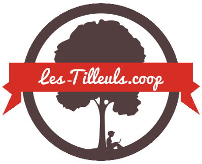

Rapport de stage



Présentation de la structure d'accueil
L'entreprise s'appelle les-Tilleuls.coop et elle se situe au 82 Rue Winston Churchill.
Nous pouvons également les joindres au 03 66 72 43 94.
Ce secteur d'activité est en ingenieurie informatique et ces principales activités
sont la création de site internet, l'architecture logiciel et le coaching en développement informatique
tous sa fait par 42 employés sur 5 villes (Lille, Paris, Nantes, Lyon, Montpellier)le plus gros burreau étant
à Lille (environ 30 salariés et 400m2)c'est donc une PME(Petite/Moyenne Entreprise).
La structure d'accueil a un statut juridique qui est une SARL(Société a Resposabilité Limité) SCOP(Société
coopérative).
C'est donc une société où les salariés sont aussi coopérateur ils prennent les décisions tous ensemble
pour l'avenir de l'entreprise (1 salarié=1 voix).
Les-Tilleuls.coop a été crée en 2014 par Kevin DUNGLAS avec deux associés qui ne sont maintenant
plus dans l'entreprise, la société a réalisé l'année dernière une croissance de chiffre d'affaire de
100% et le recrutement d'une dizaine de personnes.
L'entreprise est aujourd'hui prospère et en pleine croissance même si ils sont toujours en recrutement
pour remplir leur studio et être de plus en plus efficace.Cette société est
indépendante.
Plan de la structure d'accueil
les avantages et inconvenients de ce point géographique
| avantages | inconvenients | ||
|---|---|---|---|
| Pour l'entreprise | Pour les salariés | Pour l'entreprise | Pour les salariés |
| Proximité avec le centre ville | Points de métros pas loin | Prix des loyés élevés | Pas de proximité avec la campagne |
| Echange facile avec les autres entreprises | Proximité avec les école et les crèches | ||
| proximité avec les restaurants | |||
La structure d'accueil
Voici une photo de cette belle entreprise vue de l'exterieur.

Organigramme de la structure d'accueil
Activités sociales de la structure d'accueil
Les salariés doivent faire 35 heures par semaines donc 7 heures par jours, les horaires fixes sont:
•Le matin: de 9h00 à 12h30
•L'après midi: de 13h30 à 17h00
Il y a des accords de modulation du temps de travail:
•Arrivé entre 8h00 et 10h00
•Départ entre 16h00 et 18h00
Les salariés décide eux même des horaires de pauses ,il n'y a pas de contrôle des horaires de travail et
il n'existe pas de réglement intérieur ce qui installe une sorte de confiance entre le gérant et les employés.
Il n'y a pas de comité d'entreprise, ni de syndicats, ni de commission hygiène et sécurité pour donner des avantages et protéger les salariés par contre ils bénéficient de plusieurs
délégués du personnel.
Interview d'un développeur
Cet homme agés de 26 ans est développeur depuis 4 ans en ayans commencé dans cette entreprise, son salaire et d'environ 2 000€ net par mois.
Après la classe de 3ème il a fait une terminal scientifique option science de l'ingenieur et a fait par la suite des études d'informatique
à l'exia Cesi pour obtenir un RNCP niveau 1 (bac+5) manager des systèmes d'information.
Dès le plus jeune age il a eu accès à l'ordinateur familial, eu un gout naturel pour l'informatique et exerce donc le métier dont il révait.
Son projet serait d'apporter de l'information au sein de l'entreprise.
Il conseillerait à un jeune de 14 ans de continuer les études jusqu'à pouvoir faire de l'alternance afin d'avoir un maximum d'experience professionnel.
Les ponits positifs et négatifs de mon expérience en entreprise
Dans ce stage ce qui m'a le plus plu ça a été l'accueil et la mise en confiance en revanche ce qui m'a le moins plu sont les réunions.
Ce qui m'interresse dans ce métier est toutes les petites structures à assembler pour au final arriver à un résultat très satisfaisant.
Les moments qui m'ont paru les plus difficiles ont été mes premiers pas dans l'entreprise et petit à petit ça c'est amélioré et j'ai vraiment bien compris le principe de fonctionnement.
Grace à ce stage je me suis rendu compte que la vie active était très dur mais vraiment passionnante et je pense que je vais continuer dans cette voix pour parvenir à faire ce métier.
Mon journal de bord
- Jour 1:Ce matin là, on m'a fait la visite des locos ,on m'a présenté les employés, j'ai réfléchi à ce que je voulais faire comme projet , j'ai assisté à une réunion d'une dizaine de minute et j'ai commencé mon site internet.L'après midi j'ai appris les bases du codage et je me suis remis au boulot.
- Jour 2:Le matin j'ai posé des questions au personnel par rapport à mon rapport de stage ,jai pris des photos du batiment vu de l'extérieur et j'ai pris ma pause.L'après midi j'ai écouté une réunion qui a pris 1 heure et j'ai continuer mon projet.
- Jour 3:Le matin j'ai pris des photos des bureaux et je les ai mis dans mon site, j'ai essayé de remplir du plus possible mon site et je n'ai terminé que vers le milieu de l'après midi et j'ai ensuite appris le Java Script(c'es un langage informatique un peu comme le CSS et le HTML que je connais déja).
- Jour 4:Ce matin là, j'ai amélioré mon site internet comme j'ai pu et j'ai fait l'annexe et la partie en Anglais ce qui m'a pris toute la journée.A la fin de journée j'ai assisté à une conférence qui à été retranscrit en direct sur youtube.
- Jour 5:Pour la dernière journée, j'ai sauvegardée mon site et j'ai essayé de le mettre en ligne ce qui n'a pas vraiment étais facile même si j'ai finit par réussir.
Partie en anglais
My logbook
Jobs and qualities required
| / | JOB | Qualities required |
| 1 | developer | he must be rigorous and autonomous |
| 2 | communication manager | he must be attentive and versatile |
| 3 | sales manager | he must be rigour and charisma |
Works experience assessment
In one week I attended two meetings and a conference, I made my very first website and what I especially appreciated was the working atmosphere.